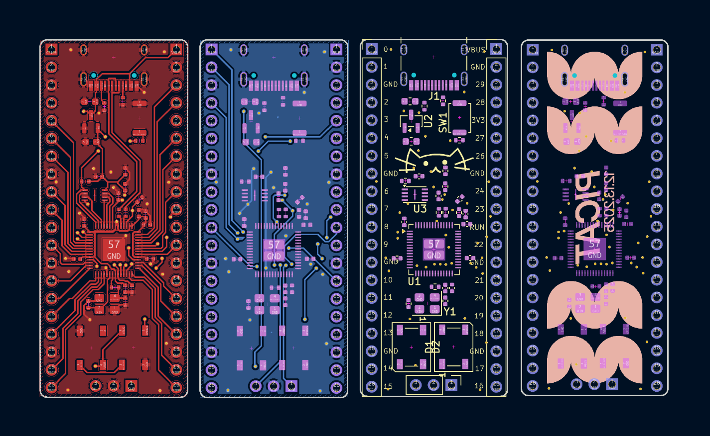
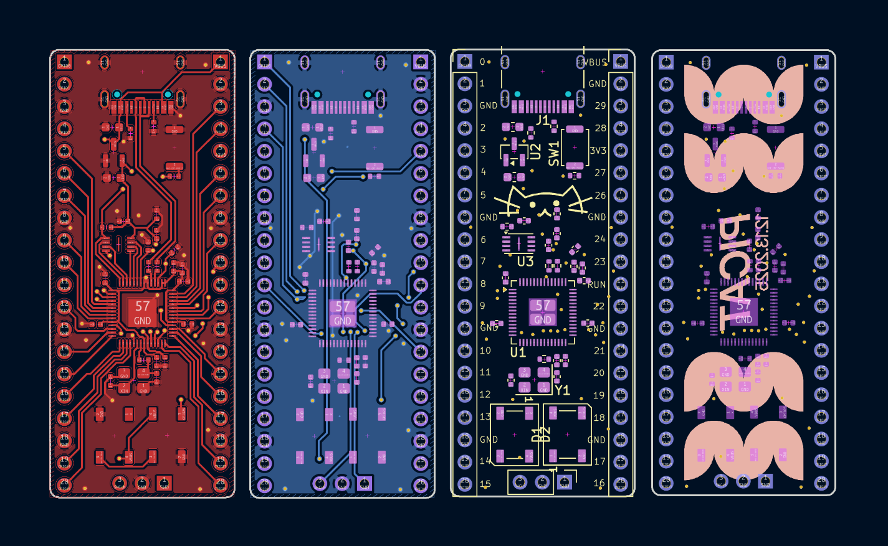

Fascinated by plants, photography, and electronics. Junior @ BHS.
Fascinated by plants, photography, and electronics. Junior @ BHS.
I am a 17 year old Junior living in Seattle, Washington, who loves the outdoors, coding, and learning new things. In the digital world, I have experience in web development, CAD, and vector design. I am familiar with Blender, Fusion 360, and VSCode, and am in the process of learning KICAD. Outside of this, I enjoy photograpy, hiking, and music. I have been learning violin and guitar for over five years now, and am in AP Music Theory class.


 PiCat is a custom RP2040-based devboard, created completely by me. It features 16mb of memory, two LEDs, and 29 GPIO pins. The layout is based on the pico board, but with more GPIO access available. I manufactured it through JLCPCB's PCBA service, funded from a hackclub grant. All pcb design was done in KICAD, and took me a lot of time. I learned most of my KICAD skills from this project, as there were many components I had to route in a very small space with only two PCB layers.

PiCat is a custom RP2040-based devboard, created completely by me. It features 16mb of memory, two LEDs, and 29 GPIO pins. The layout is based on the pico board, but with more GPIO access available. I manufactured it through JLCPCB's PCBA service, funded from a hackclub grant. All pcb design was done in KICAD, and took me a lot of time. I learned most of my KICAD skills from this project, as there were many components I had to route in a very small space with only two PCB layers.

© Silas Unger 2026 :)